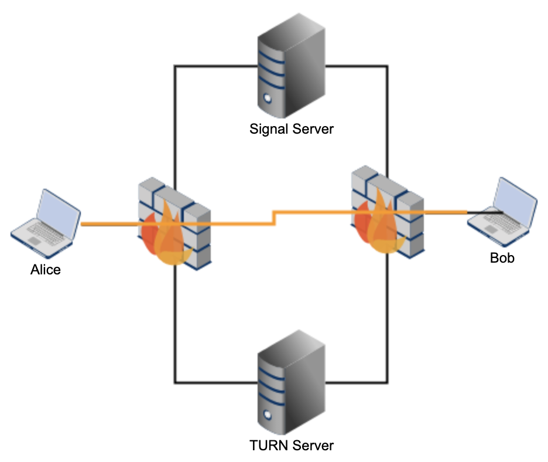

WebRTC 应用实践要点¶
WebRTC 服务器¶
WebRTC 的服务器大体分为信令服务器和媒体服务器
WebRTC 信令服务器是主要功能是为 WebRTC 通讯搭建一个了解彼此能力的通道, 交换信息, 同步改动.
而媒体服务器就是用来交换媒体，包括对媒体数据的加解密，编解码，带宽和速率控制等功能
不同的 RTP Toplogies 对服务器有不同的要求, WebRTC 或者说多媒体通信一般有如下的几种拓扑结构：
Point to Point 点对点
Point to Multipoint Using Multicast 单点到多点（使用多播）
Point to Multipoint Using the RFC 3550 Translator 单点到多点（使用RFC3550 的 Translator）
Point to Multipoint Using the RFC 3550 Mixer Model 单点到多点（使用RFC3550 的Mixer）
Point to Multipoint Using Video Switching MCUs 单点到多点（使用视频切换）
Point to Multipoint Using RTCP-Terminating MCU 单点到多点（使用RTCP 终结方式）
Non-Symmetric Mixer/Translators 非对称的 mixer/translator
Combining Topologies 混合拓扑
服务器的主要功能¶
P2P¶
如果是两个人之间的端到端 (P2P) 的通信, 信令服务器的功能很简单
交换媒体通信和处理能力,主要是以 SDP 来描述
交换连接地址, 比如 ICE Candidate
而由于是点对点的通信，媒体服务器也就不需要了。
SFU¶
如果是 SFU(Selective Forward Unit), 那么它的信令服务器除了上述的 SDP 媒体参数协商， ICE 连接地址交换，还有参加 RTP 会话的参加者信息的同步。

多个人之间的会议系统, 信令控制会麻烦很多,除了上述两个基本功能之外, 还要有
会议管理
成员管理
设备管理
会话管理
连接管理
媒体管理
管理会议中的实体
在 RFC4575 中有这样的定义
conference-info
|
|-- conference-description
|
|-- host-info
|
|-- conference-state
|
|-- users
| |-- user
| | |-- endpoint
| | | |-- media
| | | |-- media
| | | |-- call-info
| | |
| | |-- endpoint
| | |-- media
| |-- user
| |-- endpoint
| |-- media
|
|-- sidebars-by-ref
| |-- entry
| |-- entry
|
|-- sidebars-by-val
|-- entry
| |-- users
| |-- user
| |-- user
|-- entry
|-- users
|-- user
|-- user
|-- user
服务器中需要维护领域对象¶
在 WebRTC 服务器上，我们一般会维护如下的领域对象
Conference
Session
Participate
Device
Connection
MediaSession
MediaSessionDescription
MediaStream
MediaStreamTrack
等等
领域对象的具体内容从略，一般有如下的 Command 或 Event
应用层的事件大约可以分为 5 类
Request: 包括 command
Response
Subscribe
Notify
Message 就是一个消息，不要求响应, 例如 Presence 出席信息
具体的有
Start
End
Join
Leave
Offer
Answer
Mute
Unmute
Expel
RaiseHand
等等